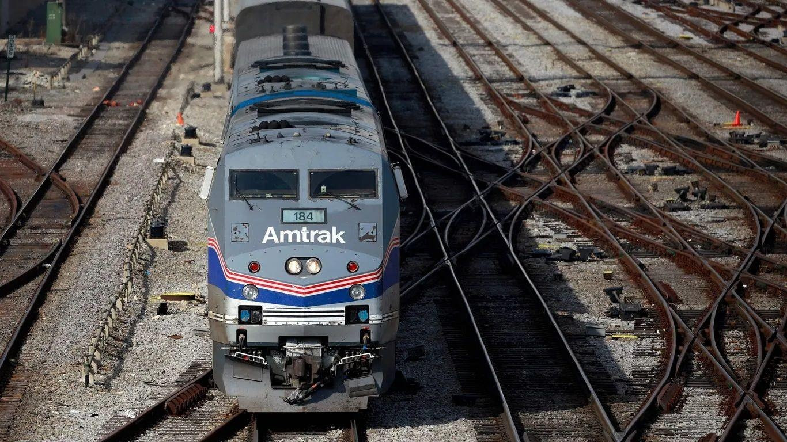

Here's what is next for Ohio passenger rail plansTrain advocates have spent years working to restore passenger rail to Central Ohio. Now that effort is really gaining steam. Driving the news: The Federal Railroad Administration (FRA) last week selected four Ohio routes as priorities for railroad expansion and issued millions of dollars in planning funds, Sam Allard writes for Axios Cleveland. Why it matters: This is a critical step toward eventually building new train routes. Details: Two of the four routes involve Central Ohio. - The "3C+D" route would connect Cleveland, Columbus, Cincinnati and Dayton. - The "Midwest Connect" route would connect Columbus with Chicago and Pittsburgh. - The other routes would connect Cleveland to Detroit via Toledo and expand service on an existing route that passes through Cincinnati and connects New York, Washington, D.C., and Chicago. What we're hearing: Ohio's better-than-expected support from the FRA is cause for celebration, train supporters tell us. Yes, but: But Ohioans still need to be patient. Project applicants — including the state of Ohio and the Mid-Ohio Regional Planning Commission — have a lot of work to do in the next 18-36 months before seeking the federal government's ultimate approval, MORPC executive director William Murdock says. - This means projecting how fast trains will go and how many riders will be served, estimating a total cost, and doing deeper environmental and engineering work. To put this in perspective: President Biden signed the bipartisan infrastructure bill funding this work in late 2021. - The rosiest timeline, Murdock estimates, would feature the first trains rolling through Columbus in 2030. Reality check: Gov. Mike DeWine has said he wants more information before committing to any train projects. - The federal government is offering billions of dollars toward the construction of new passenger rail lines, but Ohio would eventually have to foot the bill for millions in annual operating expenses. Still, DeWine's cautious approach is more encouraging than that of his predecessor, John Kasich, who in 2010 promised to reject $400 million in federal funds toward building the 3C+D line. The money was rescinded. - The current public and private support for rail expansion is "so above and beyond what we experienced 13 years ago," says Stu Nicholson, who formerly led the advocacy group All Aboard Ohio. The bottom line: Ohioans will need to be patient, but at least things are on the right track for those who want passenger rail service. More Columbus stories No stories could be found |
 |